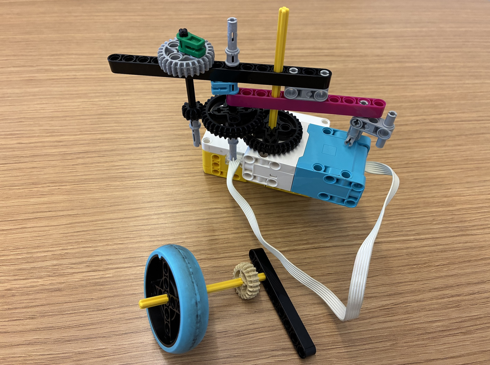

For this project I tried to make the gears have the highest velocity ever by pairing the bigger gears with the smaller ones and tie them to an axle so that they multiply each other. I believe that theoretically my maximum gear ratio would be 5:63. (Calculated by 12:36 times 12:36 times 20:28)However, I think that I spent too little time designing the top, and I didn't consider logistics of how I would charge the top using that, hence I don't believe that it succeeds as a top spinner, despite it producing a very high velocity.